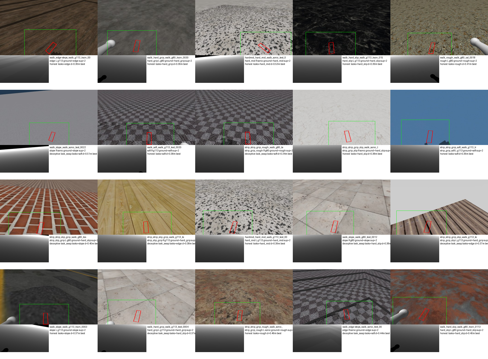
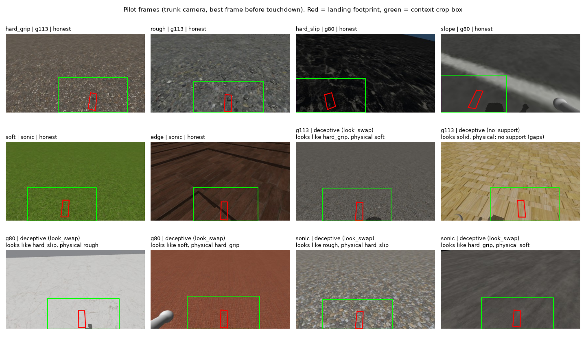

A dataset with eyes
To teach a camera from the sole, every footstep needs two things: what the robot saw before the step and what the sole felt after it. The step-1 walking data had a sole but no camera. I replayed a third of it exactly and rendered a torso camera on top, with honest floors and with floors that lie.
In short
- 1,572 episodes, 54,010 footsteps. About 30 % of the step-1 walking data, replayed bit for bit. Every replay matched the stored run exactly.
- For each step: a camera frame before it, the sole after it, and the simulator's truth. The camera is RGB-D, on the torso, pitched down. The sole is stored as coarse features under three sensor models.
- Textures are split like the episodes. Test episodes show only floor textures that training never sees, but there are only three test textures per class.
- 26.6 % of the steps are deceptive. The floor looks like one class and behaves like another, or a sheet hides the gaps between planks.
- One known gap in the labels. The step-1 contact flag misses a foot that is loaded on its front edge. It touches up to 3.0 % of the heel-to-toe gait's steps in a wide window, and none inside the step windows that are used.
Why a new dataset
Step 1 of the project trained a simulated sensing sole on a Booster K1 humanoid to name the floor after each step. Its episodes store the joints, the IMU, the sole signal and the true floor, but no images. The question of experiment 1 is whether the sole can teach a camera: a vision model sees the floor before the step, and the sole supplies the label after it. For that, every footstep needs a frame from before and a sole reading from after, on the same trajectory.
Six floor classes: grippy hard floor (hard_grip), slippery hard floor (hard_slip), soft, rough, slope, and edge (planks and steps, where a foot can land partly over a gap). Three gaits: two ordinary locomotion policies that step with a flat foot (G113 and G80), and SONIC, human-like heel-to-toe walking.
Exact replay
The step-1 episodes do not store the full state of the simulation: no base pose and no terrain geometry. Re-running a stored task turned out to reproduce it bit for bit, so the frames come from a deterministic re-run. Each episode is re-simulated from its stored task, and every stored array is compared bit for bit with the original. An episode that differs would be dropped. None did: all 1,572 replays are identical.
The frames are rendered afterwards from the saved state. So the honest and the deceptive view of an episode are the same trajectory with different textures, and the sole signal is the same in both.
The whole step-1 set (6,139 episodes) would have taken about 9 hours to replay, so I took about 30 % of it, stratified by class, gait and split. Test strata are sampled about twice as densely as training and validation, so that at least 20 % of the steps can be deceptive and an honest test set is still left.
What is in it
| Split | Steps | Floor textures |
|---|---|---|
| Train | 29,105 | training textures only |
| Validation | 4,267 | validation textures only |
| Test (honest) | 6,269 | test textures only |
| Test (deceptive) | 14,369 | test textures only |
| All, 1,572 episodes | 54,010 | 14.1 GB |
Reading the table. An episode keeps the split it had in step 1, and no episode is in two splits. Deceptive episodes are step-1 test episodes, and 14,369 steps are 26.6 % of the whole set. Of the deceptive steps, 726 come from the hidden-gap kind (no_support, below).
- Floor classes. The six classes above, plus hard_mid, an extra hard-floor type that appears only in the test data and has no class of its own, and strip episodes in which the robot walks from one floor onto another (grippy to slippery, slippery to grippy, grippy to soft, grippy to rough).
- Textures. Photo textures from ambientCG (CC0). Per class, 25 % are test textures, two are validation textures and the rest are for training; hard_mid has 8 test textures. The independent re-check counted 42 training, 12 validation and 26 test textures, with no overlap, and only 3 test textures per scored class.
- Truth per step. The class of the floor touched, the support state of the foot (none, partial or full), friction, stiffness and slope, all taken from the simulator 0.1 s after touchdown.
- The sole. Coarse sole features only: four pressure blocks, four shear vectors, centre of pressure, total force and contact area. They are stored under three readouts of the same simulation: the step-1 sensor (parameters randomised per episode), the nominal sensor, and a shifted sensor (blocks moved, twice the spread, noise and compliance, crosstalk 0.05, gain spread 0.06, 0.1 N quantisation).
- Not built. A differently built "pad" sole changes the dynamics, so it cannot be a readout of these runs. The planned small pad-sole test subset was not built.
Camera and frames
- Mount. Fixed to the torso, 0.09 m forward and 0.18 m up from the trunk origin, about 0.72 m above the ground when standing, pitched 40° down.
- Image. 424 × 240 pixels, pinhole, vertical field of view 58° like a D455 depth camera, horizontal 88.8°. RGB and depth at 10 Hz.
- Depth. Stored without noise, in millimetres; 0 means invalid (closer than 0.4 m or beyond 6 m). A D455-like noise (σ = 0.005 z² m, spatially correlated) is added when the data is loaded, the same way every time for a given frame.
- The robot itself. The robot's own arms can be in view, as on the real robot.

Honest and deceptive floors
- Honest. Each terrain region shows a texture of its own class.
- look_swap. Every region shows a test texture of a different class: the look of one class on the physics of another. This is the deceptive floor: it looks like one class and behaves like another.
- no_support. Only on plank floors. A sheet that exists only for the camera lies 2 mm below the plank tops and hides the gaps. It looks solid and gives no support. The depth image is rendered with the sheet too.
Every deceptive episode is rendered in both looks, so each deceptive step has an honest twin with the same motion and the same sole signal.

Steps, frames and crops
- A step is a touchdown before any fall with a sole window of at least 5 frames (from touchdown to lift-off, at most 0.6 s). Contacts shorter than 0.1 s are not steps. In every look it needs, the step must also have at least 3 camera frames taken 0.5 to 2.5 m before the landing spot, with at least half of the landing sole visible.
- The best frame is the frame before contact in which the landing footprint is largest, while it is wholly in the image, not covered and beyond the 0.4 m minimum depth. That is usually about 0.4 m ahead, at the bottom of the image.
- The context crop is a 0.54 m square on the floor around the landing spot, three foot lengths, projected into that frame.
- The footprint is small. In the pilot (18,211 steps, 99.8 % with a best frame) its area was 795 / 1,015 / 1,190 px² at the 5th / 50th / 95th percentile, at a horizontal distance of 0.33 / 0.39 / 0.51 m. At 1.4 m it would be only about 10 × 15 px.
Sole sanity check
The plan was a simple rule for the sole: while standing, it must read the robot's weight within 2 %, and in swing it must read zero.
- On the sensor readout the rule fails, by design of the sensor. The step-1 sensor model adds a per-episode offset and gain error, so 58 of 874 standing windows were more than 2 % off (largest 5.1 %, mean signed error −0.1 %).
- Decision: keep the threshold, change what it is applied to. The hard rule was run on the simulator's noise-free contact forces, on 60 re-replayed episodes stratified over classes and gaits. The noisy sensor numbers are kept for information.
- Standing: pass. 82 standing windows, largest error 0.89 %.
- Swing: fail as first defined. In 50 of 2,095 swing phases the contact flag is off while the ground pushes on the foot with more than 0.1 % of body weight, at most about 113 to 115 % of body weight (the two internal records give 113 and 115). By gait: SONIC 43 of 392, G113 4 of 797, G80 3 of 906. By class: edge 15, rough 14, grippy-to-soft strips 13.
The cause is the gap described next. The swing rule was then checked against the simulator's foot contacts, and the gap was documented with its numbers instead of re-running the replays.
Known gap: the edge-loaded foot
Step 1 sets its contact flag only when the force along the sole's normal, averaged over a frame, exceeds 2 N. At toe-off the box-shaped foot pitches 55-65° and loads its front edge, or it stubs the riser of a step. The ground then pushes hard, but almost along the plane of the sole. The contact flag stays off, the support state is "none", and the sole reads about zero. A sole touching the other foot also counts as contact.
| Kept steps that overlap an edge-loaded frame | G113 | G80 | SONIC |
|---|---|---|---|
| Inside the step window (touchdown to lift-off) | 0.0 % | 0.0 % | 0.0 % |
| Inside a fixed 30-frame window | 0.0 % | 0.4 % | 3.0 % |
Reading the table. From the 60-episode noise-free re-run, 2,110 kept steps. The step windows start at touchdown, and none of them overlaps such a frame. In a fixed 30-frame window the share reaches 3.0 % of SONIC steps. The sole model and the contact labels miss toe-off and stub loads, mostly for SONIC.
Checks
- Dataset check: 17 pass, 0 fail. The independent re-check ran it again and got the same.
- Counts and fingerprints. The re-check found 1,572 episodes, 54,010 steps and the split counts above exactly, and the same test-list fingerprints on both machines that held a copy.
- Replay. In 20 random episodes the re-check found the joints, IMU, labels and contact flags equal to the step-1 files. Holds with a caveat: only 20 episodes were checked independently.
- Splits. No episode in two splits, and training, validation and test textures disjoint. Holds with a caveat: only 3 test textures per class.
- Looking at frames. A first contact sheet showed MuJoCo's default checker floor or empty space beyond the textured patch in some frames, and the robot's hand in some crops. Crops that show the robot are flagged per step, and the re-check saw no empty space in its 20 sample crops. In those samples, about half of every square crop is grey padding below the image, because the footprint sits at the bottom of the frame.
The full re-check is on its own page: independent re-check of experiment 1.
Limits
- Simulation. Rendered frames and a simulated sole. A texture on a flat plane has no depth, gloss or deformation.
- Few test textures. Three per class, so every test score rests on a handful of looks.
- The crop knows the future. It is placed from the true landing pose.
- The edge-loaded foot. Documented, not fixed.
- No pad-sole data. The sensor-change test for vision rests on the shifted readout only.
Scores in this experiment are macro-F1 per step against simulator truth, on held-out textures. Next: the two teachers, the vision head, support state from vision, the VLM on real photos, the VLM tuned on the sole's labels, independent re-check. Experiment 2 uses its own dataset: dataset of experiment 2. Textures: ambientCG, CC0.